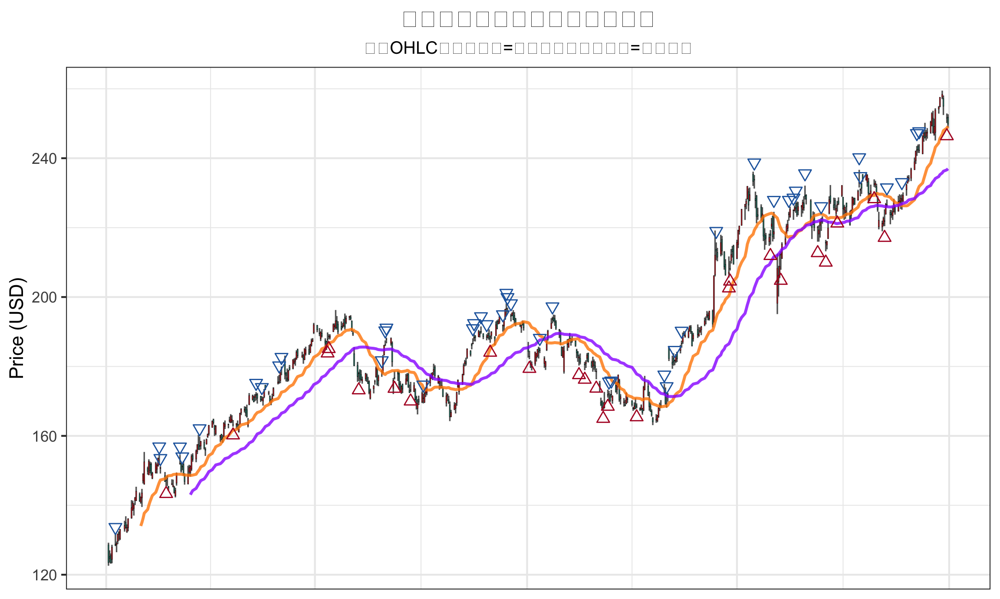
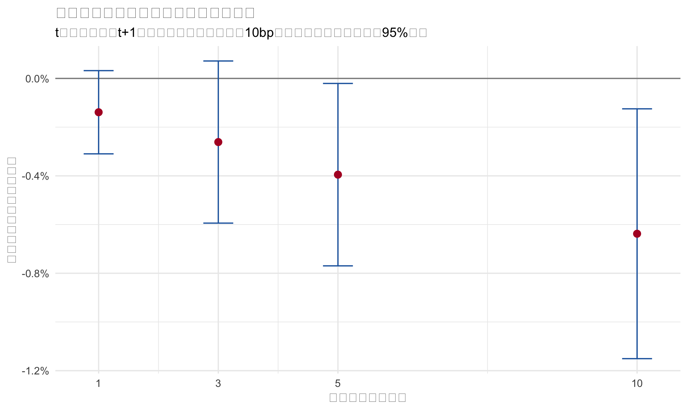

R与Python绘制可审计的蜡烛图
问题现场
一张蜡烛图可以非常漂亮，却仍然不可复现：数据来自哪里、价格是否复权、缺失交易日怎样处理、图上均线是否使用未来数据，都可能没有答案。本章的目标不是再画一张图，而是建立“数据—变换—图层—输出”可追踪的制图流程。
学习目标
- 验证OHLCV字段和交易日唯一性；
- 说明原始价格与复权价格各自用途；
- 使用R/Python
eFinCharts构建相同区间的蜡烛图； - 把形态标记作为独立图层加入，而不修改行情数据；
- 识别图形中可能造成误读的比例尺与抽样问题。
经典形态与市场机制
传统蜡烛图强调实体颜色、影线和相邻K线的相对位置。现代研究还必须处理成交量、公司行为、交易时区和非交易日。复权价格适合计算连续收益和形态几何，原始价格适合模拟当时真实成交；二者混用会使收益和执行价格不在同一尺度。
十字线适合作为制图示例：实体很小，若分辨率、纵轴范围或线宽设置不当，它可能被误画成普通实体。颜色也不应是唯一编码，本书同时用三角方向和位置区分看涨、看跌候选。
可计算定义
数据主键为 (code,date)，且每个交易日满足：
\[ H_t\ge\max(O_t,C_t,L_t),\qquad L_t\le\min(O_t,C_t,H_t). \]
调整因子定义为 \(a_t=C_t^{adj}/C_t^{raw}\)，复权OHLC均乘以同一个 \(a_t\)。十字线的一个参数化定义为 \(|C_t-O_t|/(H_t-L_t)\le\tau\)；R包默认还约束影线比例，避免把无波动日误作十字。
研究设计
制图实验固定使用2023—2024年AAPL日线。程序先验证列名、日期排序、重复主键和OHLC关系，再把宽表转换为 xts 或 DatetimeIndex。本章研究信号为十字线，并按此前5日涨跌赋予反向候选方向，仅用于演示标记。所有图均从冻结文件生成，不从图表网站截图。
R实现
panel <- lab_read_data()
ohlc <- lab_xts(panel)
doji_r <- eCandleSticks::add_csp_doji(ohlc)
chart_r <- eFinCharts::ecandlesticks(
ohlc,
start_date = "2023-01-01",
end_date = "2024-12-31",
show_volume = TRUE,
show_ma = TRUE,
ma_periods = c(20, 50),
title = "AAPL：价格、成交量与移动平均线"
)
print(chart_r$combined_plot)ecandlesticks() 返回价格图、成交量图、组合图及整理后的数据，而不是直接把图写死到设备。这使后续形态标记和主题修改仍可审计。
Python实现
from python.candlestick_lab import load_data, to_ohlcv
from ecandlesticks import add_doji
from efincharts import candlestick
ohlcv = to_ohlcv(load_data()).loc["2023-01-01":"2024-12-31"]
doji_py = add_doji(ohlcv)
(
candlestick(ohlcv, volume=True, ma=[20, 50], title="AAPL")
.add_pattern(doji_py[["Doji"]], name="Doji", bull=True)
.save("figures/ch02-python-doji.png")
)Python eFinCharts 使用builder模式：先创建主图，再逐层添加均线、指标或形态，最后显示或保存。这与R端“先生成组件，再叠加图层”的研究逻辑一致。
图形诊断

检查图形时，不只看信号方向，还要核对信号日期是否与原表一致、极端值是否压缩其他K线、均线是否从足够长的预热样本计算。若先截取两年数据再算50日均线，开头50日会丢失本可利用的历史信息；本书先在全样本计算，再筛选显示区间。
证据与稳健性
| sample | events | mean_gross | mean_net | win_rate | ci_low | ci_high |
|---|---|---|---|---|---|---|
| 全部事件 | 399 | -0.0030 | -0.0040 | 0.4361 | -0.0077 | -2e-04 |
| 非重叠事件 | 264 | -0.0033 | -0.0043 | 0.4091 | -0.0090 | 4e-04 |

十字线数量多，但数量不等于信息量。稳健性检查包括：改变实体阈值，观察信号数量是否剧烈变化；用原始价格作图并核对公司行为日，确保复权没有改变视觉判断。若小幅改变纵轴或阈值就完全改变结论，形态定义不够稳健。
AI协作实验室
AI可根据字段字典生成数据校验测试，比较R和Python图层参数，并检查保存的PNG尺寸。约束是不得重新下载行情，不得通过肉眼移动标记。验收方法包括文件哈希、信号日期抽样核对和图层数据行数检查。AI可以指出“图可能误导”的位置，但最终判断必须回到数据对象。
失效条件与常见误区
- 只复权收盘价，导致实体和影线几何失真；
- 先裁剪显示区间再计算滚动指标，造成预热样本不足；
- 用周末补零或前值填充，制造不存在的K线；
- 依靠红绿颜色作为唯一方向编码；
- 把图像像素识别结果当成原始OHLC。
本章小结与练习
可审计图表的核心不是主题美观，而是数据来源、变换、图层和输出都能复现。eFinCharts 提供统一金融图底座，形态检测则由 eCandleSticks 独立完成。
- 用同一数据分别画复权与原始价格，定位拆股附近差异。
- 把十字阈值改为实体占振幅5%和15%，比较信号数量。
- 写一个测试，确保图层中的每个标记日期都存在于OHLC索引。
进入下一章前，请确认你能解释为什么研究价格与成交价格可能采用不同尺度，以及为什么图例不能替代事件研究。